Final project · MMI5190E · From Perception to Agentic Intelligence
PlacementRadar
Every product in a YouTube video – which exact model, what the exposure is worth, whether it is labelled as advertising, and which creators fit a brand.
Moritz Binder · M.Sc. Marketing Intelligence · Prof. Pin Luarn · Pforzheim University · winter term 2026/27
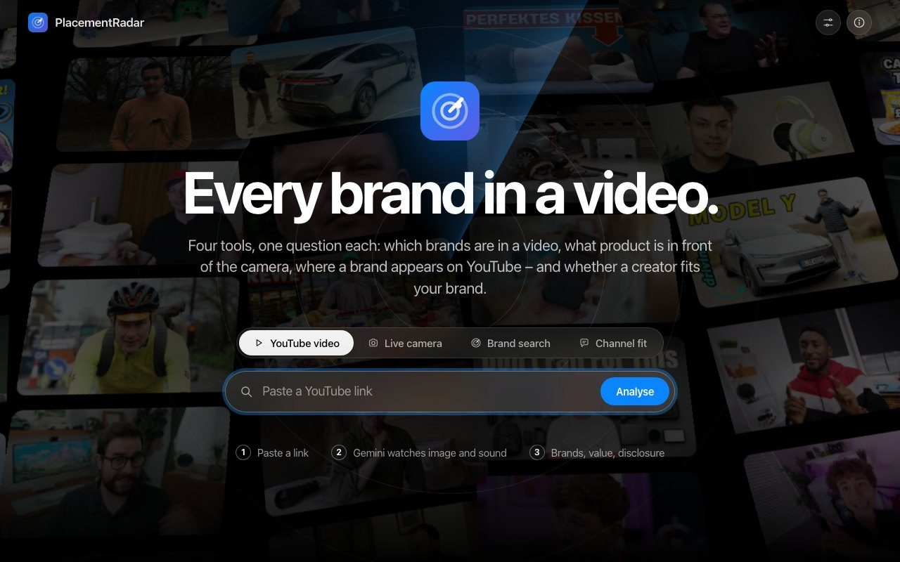
placementradar.itsmoribind.workers.dev
1 / 18
Why
Product placement is everywhere –
and almost nobody measures it
Brands
“What was my exposure in this video worth?”
Seconds on screen, size, spoken mentions – today counted by hand, if at all. A 15-minute review means 15 minutes of watching per video.
Viewers and regulators
“Is this an ad – and is it labelled?”
In Germany commercial content must be recognisable (§ 5a (4) UWG, § 22 MStV). Hidden advertising (“Schleichwerbung”) keeps coming up.
Marketing teams
“Which creator really fits us?”
Follower counts say little. What matters: which products a channel already shows, competitors next door, and whether it labels its ads.
PlacementRadar turns one YouTube link into a dashboard in about a minute: every brand, every model, every second it is visible, what comparable advertising would cost and whether the ad is labelled. No video is downloaded – the AI watches it straight from YouTube.
PlacementRadar · Why
2 / 18
What for, and for whom
Three users, one evidence base
Brand and marketing teams
- 1Exposure and equivalent ad cost per video and brand
- 2Where does my brand appear on YouTube – paid or not?
- 3Shortlist of creators for a product, with a fit score
- 4One-page brand report and a ready pitch mail
Viewers, consumer protection, research
- 1Is there a label – in the title, description, on screen or spoken?
- 2Commercial signals: affiliate links, gifted products, sponsors
- 3Does the recommendation feel genuine? Six factors with evidence
Shoppers and store staff
- 1Point a camera at products – brands are named on the device
- 2Barcode gives the exact product (Open Food Facts)
- 3Camera images never leave the phone unless you tap a box
PlacementRadar · What for
3 / 18
What it is
Four tools on one start page
YouTube video
One link → products, screen time, media value, ad label, authenticity, audience, brand report.
Live camera
Packages boxed and named on the device: detector, text recognition, own brand model.
Brand search
An agent: brand in → it searches YouTube, asks before spending quota, writes a report.
Channel fit · Find creators
Does a creator fit my brand? Or: product in → ranked creators with an AI estimate.
PlacementRadar · What · live: placementradar.itsmoribind.workers.dev
4 / 18
Tool 1 · YouTube video
One link – every product, every second
- 1
Exact models
Gemini watches picture and sound: “Sony WH-1000XM5”, not just “headphones”. Title and description are read as evidence – a shop link is kept only if it really is in the description.
- 2
Right now + tracking boxes
While the video plays, a panel lists what is in the picture, spoken or written at that second; labelled boxes follow the products over the original player.
- 3
Timeline and product cards
One lane per brand (visible / spoken / on-screen text), screen time as a range, mentions, affiliate links. A click jumps to the moment.
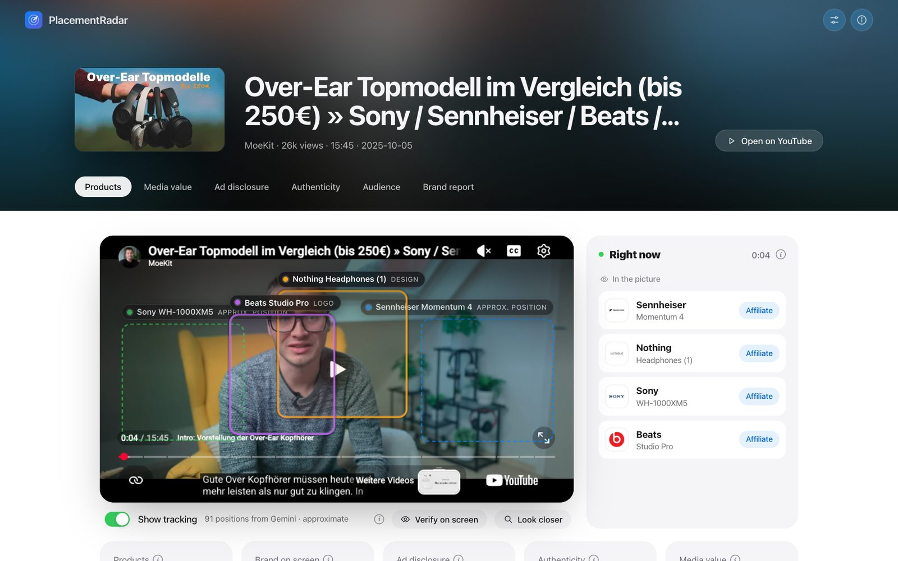
PlacementRadar · Example: MoeKit, “Over-Ear Topmodell im Vergleich”
5 / 18
Tool 1 · what it means
What is it worth? Is it labelled? Does it feel genuine?
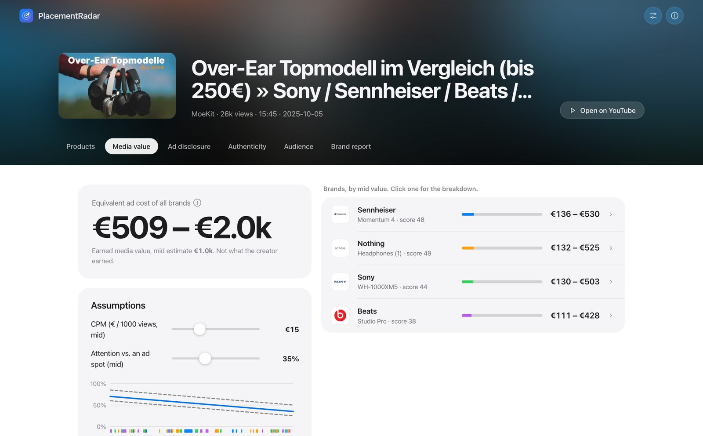
Media value
Equivalent ad cost – views, seconds weighted by size, position, speech and text, audience drop-off, CPM. Shown as a range, every assumption adjustable.
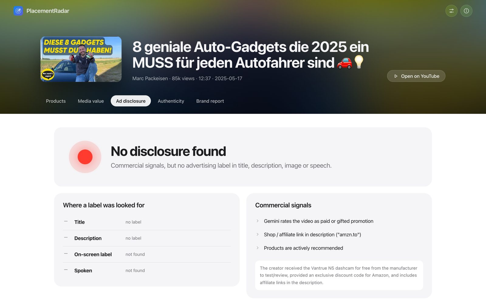
Ad disclosure
Where a label was looked for, which commercial signals exist (affiliate, gifted, sponsor) – and a neutral verdict with timestamps.
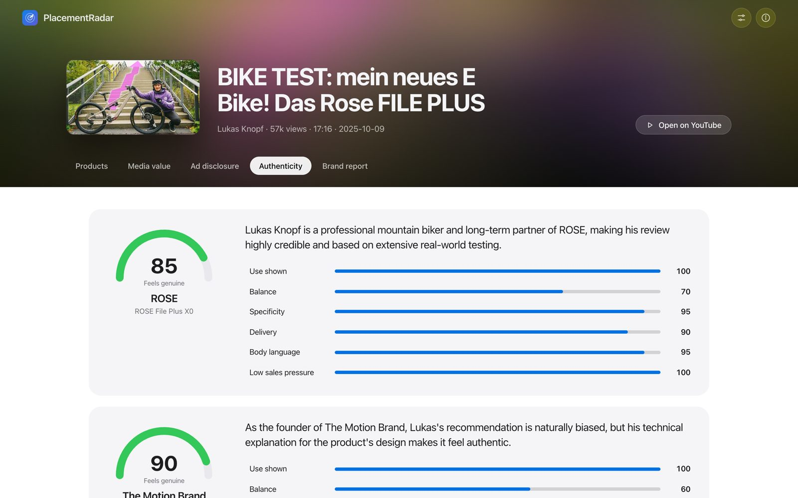
Authenticity · report
Six factors from source credibility and the Persuasion Knowledge Model, each with evidence. One A4 brand report and a pitch mail per brand.
PlacementRadar · Formulas in README § 4
6 / 18
Don't just trust the AI
Verify on screen: our models check Gemini
The page cannot look into the YouTube player. With one click the viewer shares the tab, and the models on the device look at the real frames: text recognition, our brand model, two object detectors and a product-type check.
Measured boxes replace Gemini's estimated ones. Products the device sees but Gemini missed are added. Nothing is uploaded.
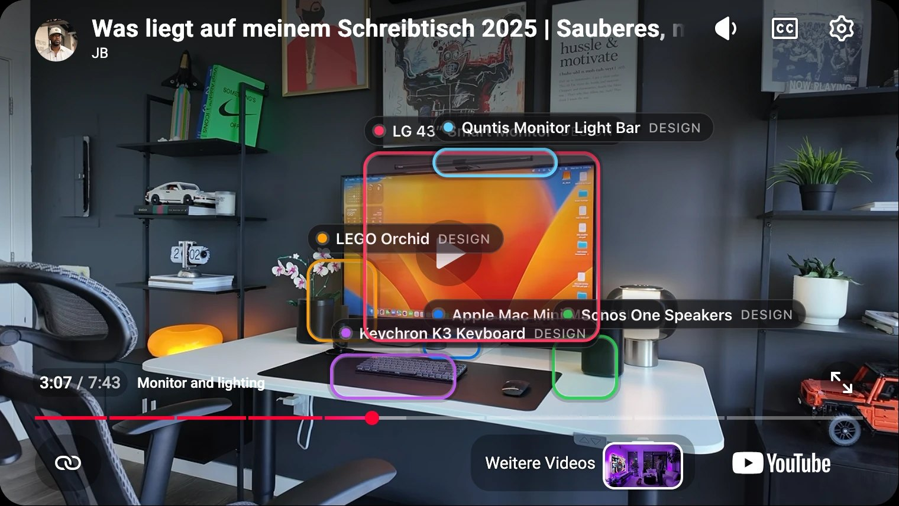
PlacementRadar · Test V in EVALUATION.md
7 / 18
Tool 2 · Live camera
Point a camera at products – named on the device
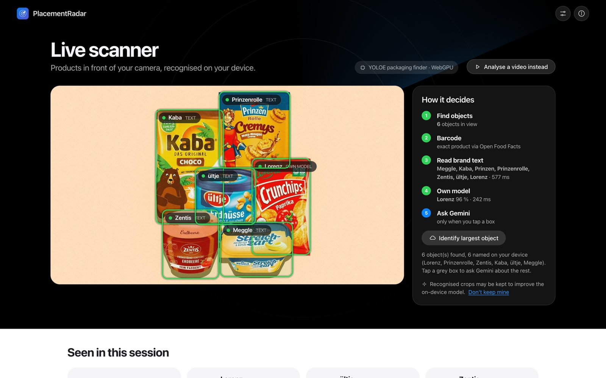
- 1
Find
YOLOE packaging finder boxes and tracks every package.
- 2
Read
Text recognition against 3,599 brands; barcode → exact product.
- 3
Recognise
Script logos OCR cannot read (Coca-Cola, Oreo) → our own brand model.
- 4
Ask
Only a tapped crop goes to the cloud – and Gemini's confident answer teaches our model.
PlacementRadar · Runs in the browser with ONNX Runtime Web (WebGPU / WASM)
8 / 18
Tools 3 + 4 · agentic intelligence
From one video to the whole market
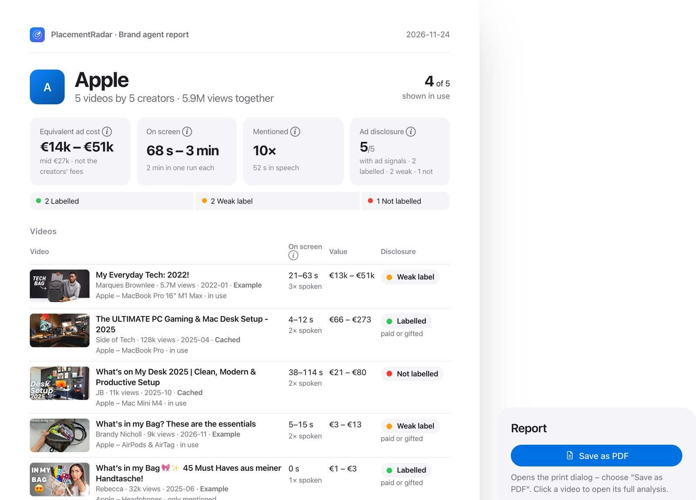
Brand search
“Sonos” → the agent plans, searches YouTube, filters, reuses analyses it already has – and stops to ask before it spends quota on new ones. Then a report across videos.
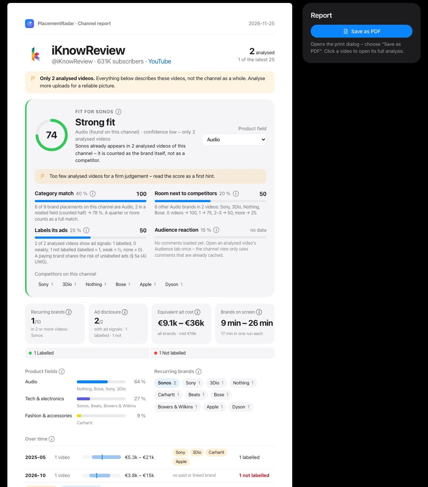
Channel fit
A creator's last 25 uploads and our analyses → fit score: category match, room next to competitors, labels its ads, audience reaction.
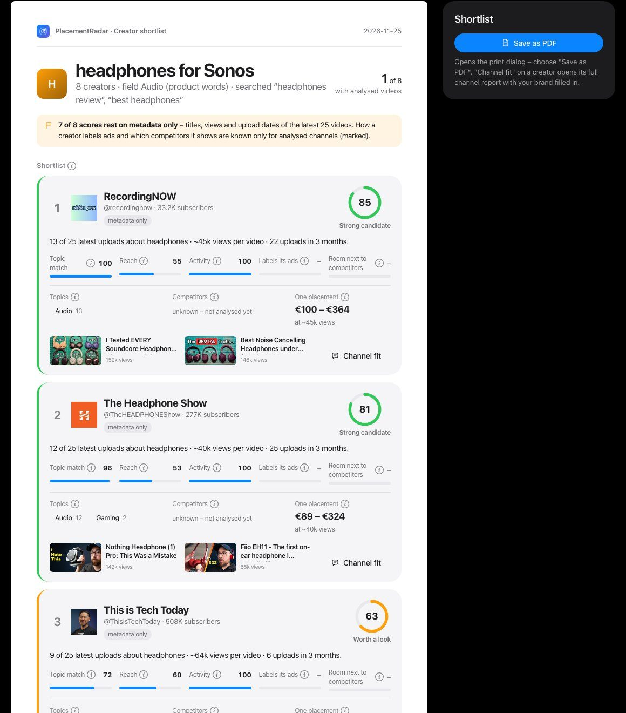
Find creators + AI estimate
Product in → ranked YouTube creators with a short analysis. Gemini adds audience, tone and risks – its quotes are checked against the sources.
PlacementRadar · Live steps over Server-Sent Events
9 / 18
How it is built
Three engines that perceive, one agent that acts
Input
YouTube link
video, title, description, comments
Camera or photo
stays on the device
Brand, product or channel
for the agentic tools
Perception
Engine 1 · Gemini (cloud)
watches the video from YouTube: brands, models, seconds, boxes, label, authenticity – fixed JSON schema
Engine 2 · on-device vision
YOLOE + YOLO26 detectors, PaddleOCR, barcode – in the browser, no quota
Engine 3 · our own model
MobileCLIP-S1 encoder + our brand heads, 1,137 brands, trained by us
Reasoning and action
Cloudflare Worker
keeps the key secret, cache (KV), daily limits, checks every link and quote
Agent
plans → YouTube Data API → filters → asks before spending quota → aggregates
Rules you can read
media value, fit and creator scores are formulas, not black boxes
PlacementRadar · README § 3, MODELS.md
10 / 18
Making of · Engine 3
How we trained our own brand model – on a laptop
1 · Collect
76,000
open photos
64,000 packs from Open Food / Beauty / Products Facts + 20,549 Wikimedia Commons photos, author and licence of each listed
2 · Augment
×3
webcam views
our own camaug.py: blur, glare, a hand in front, perspective, JPEG – so it works on a real camera, not only on clean shots
3 · Embed
190k
fingerprints
Apple's MobileCLIP-S1 stays frozen and turns every view into 512 numbers – 56 min on the MacBook GPU (MPS)
4 · Train
1,137
brands, two heads
our linear heads: 1,020 packaging brands + a second stage for tech, fashion, sport, home, cars – seconds per run
5 · Calibrate
≤ 2.5 %
false alarms
it answers only if the head (≥ 0.95) and the encoder's own text knowledge agree; thresholds set on a held-out split
6 · Ship
0.24 s
per box, in the browser
float16, split into 3 files under Cloudflare's 25 MiB limit, run with ONNX Runtime Web – no server, no API
It keeps learning
When a user taps a box and Gemini names the brand confidently, the crop becomes a new training example – the big model teaches the small one (distillation, teach_pull.py).
Also built by us
YOLOE exported with 31 fixed packaging words, a brand dictionary of 3,599 brands from 60,000 products for text recognition, 93 product-type fingerprints for Verify on screen.
Reproducible
Every step is a script in tools/ – data, augmentation, training, export – and every result is in EVALUATION.md, tests S2–S5.
PlacementRadar · MODELS.md, tools/
11 / 18
Engine 3 · what it achieved
A brand model for things OCR cannot read
Apple's small MobileCLIP image encoder stays frozen. We trained brand heads on top: 1,020 packaging brands from 64,000 Open Food / Beauty / Products Facts photos and 117 tech, fashion, sport, home and car brands from 20,549 Wikimedia Commons photos – every photo also seen in three simulated webcam views.
It answers only when the head and the encoder's own knowledge of brand names agree; thresholds were calibrated for few false alarms. Gemini's confident answers become new training examples (distillation).
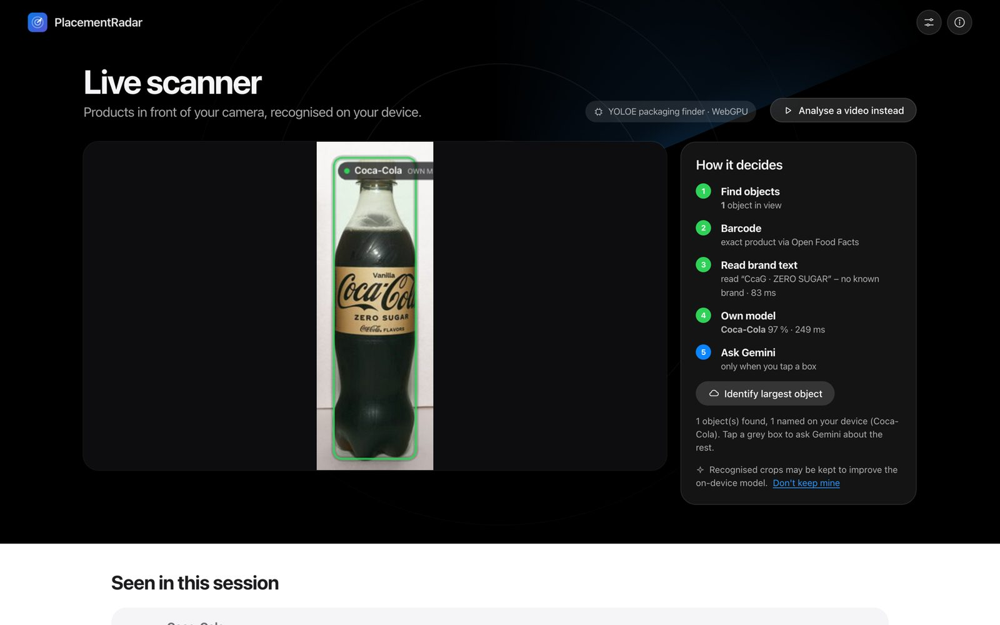
1,137
brands, 76,000 freely licensed training photos
96.8 %
of its answers right on 5,189 products it never saw
42/49
real phone photos named by OCR + own model – also in webcam quality
0
wrong brands from the model on those 49 photos; ~0.24 s per box in the browser
PlacementRadar · Tests S2–S5 in EVALUATION.md
12 / 18
Engineering under a free quota
Built to run on free tiers – and keep running
~20
Gemini requests per day and model family on the free tier – every request counts
0
requests for the 11 examples and the live scanner – they work when the quota is gone
1×
each video is analysed once – stored and reused for every later visitor; AI estimates kept 7 days
~200
of 10,000 daily YouTube API units per creator search – the agent shows the cost first
Model chain
If one Gemini model is busy (503) or out of quota, the Worker falls back to the next one; for a camera crop Llama 3.2 Vision on Cloudflare Workers AI.
Ask before spending
Every agentic tool stops at a confirm card with today's quota before new analyses. At most 3 per run.
Safe with untrusted text
Descriptions and comments go to the model as marked data; links and quotes are only kept if they appear verbatim in the source.
PlacementRadar · README § 6 Hosting and the Gemini key
13 / 18
Making of · we measured, then changed course
Every number here forced a decision
Packaging finder
COCO's YOLO26 knows bottles and cups, not snack bags. We exported the open-vocabulary YOLOE with our own packaging words.
Own brand model v1 → v2
131 → 1,020 brands, webcam augmentation and hard negatives: answers right on products it never saw, 6× as many named.
Products lying around (desk tour)
Gemini missed what lies in the background. A second “re-check” pass plus a filter against copied spans – recall measured on hand-marked frames.
Brand list for text recognition
Built from 60,000 of the most scanned products in Germany; 36–37 → 39 of 49 real photos read by OCR alone.
Dropped
Gemini's own confidence
It said 1.0 for every appearance, so it cannot tell good from bad boxes – the app grades boxes by distance to a reported position instead.
Dropped
Bigger models in the browser
Marqo-Ecommerce (best in our test, ~350 MB) and the MobileCLIP text encoder (127 MB) were too heavy for a web page – replaced by our head and 93 precomputed types.
PlacementRadar · EVALUATION.md – including what failed
14 / 18
How good is it – measured, not claimed
Mostly right when it shows something – but it misses time
Test M: three videos marked by hand every 2 s (957 frames, 24 products), checked frame by frame by a human, compared with the stored analyses.
| Question | MKBHD · one by one | JB · desk tour | iKnowReview · 5 headphones |
|---|---|---|---|
| When the app shows a product, is it in the picture? (precision) | 76 % (re-check 86–92 %) | 71 % | 87 % |
| Of the time a product is visible, how much does the app show? (recall) | 9 % (re-check 14–29 %) | 62 % with re-check | 31 % |
| Products found at least once | 7 of 10 | 9 of 9 | 5 of 5 |
| Median start-time error of a found appearance | 2 s | 2 s | 1 s |
Read screen time and value as ±50 %. Two runs of one video share about half of their brand-seconds – the app shows ranges.
Ad label agrees with SponsorBlock where the community marked a sponsor segment (1 of 1) – only 4 of 14 videos have any entry.
Every test is documented – including what failed and what changed because of it (EVALUATION.md, 28 test series).
PlacementRadar · EVALUATION.md, test M
15 / 18
Limits and ethics
What it cannot do – said plainly
Accuracy
- 1Gemini misses products lying in the background and varies between runs.
- 2Boxes are Gemini's estimates unless “Verify on screen” measures them.
- 3Our model knows 1,137 brands; for others it stays silent on purpose.
Meaning
- 1Media value is an equivalent ad cost, not the creator's income.
- 2The disclosure check judges content, not people – estimates, not legal advice.
- 3Top comments are not a survey; word rules miss irony.
Privacy
- 1No video is downloaded or re-hosted; the original player is embedded.
- 2Camera and shared-tab frames are analysed on the device, never uploaded.
- 3Comment authors' names are never read; excerpts ≤ 100 characters.
Licences
- 1Own code AGPL-3.0 (because of the YOLO models) – fully public.
- 2MobileCLIP-derived files: Apple's research licence, non-commercial only.
- 3Training data: Open Food Facts (ODbL), Wikimedia Commons with authors listed.
PlacementRadar · README § 9, THIRD_PARTY_NOTICES.md
16 / 18
Making of
8 days, 58 commits, three engines
19 Nov
kick-off
- Video dashboard
- Cloudflare Worker
- Live scanner v1
20 Nov
16 commits
- Online with KV cache
- YOLOE + OCR on device
- Own model v1
21 Nov
11 commits
- Apple-style redesign
- Tracking boxes
- Own model v2: 1,020 brands
22 Nov
re-check
- Products lying in the picture
- Filter for copied spans
23 Nov
measure
- Ground truth: 957 frames
- Verify on screen
24 Nov
13 commits
- Brand agent
- Audience comments
- Verify tiles
25 Nov
agentic
- Own model v3: 1,137 brands
- Channel fit, Find creators
- AI estimate
26 Nov
hand-in
- Licences, public repo
- All tests published
- These slides
15,300
lines of our own code (JS, Python, HTML, CSS)
76,000
openly licensed photos to train our model
28
test series, documented with failures
957
video frames marked and checked by hand
11
analysed example videos, free to open
€0
running cost – free tiers only
PlacementRadar · git history: github.com/moritzb1/placementradar
17 / 18
Try it yourself
No login, no key.
Open an example or paste a link.
placementradar.itsmoribind.workers.dev
Code, models and every test: github.com/moritzb1/placementradar · README (3-minute tour), MODELS.md, EVALUATION.md
Built with Gemini, YouTube Data API, Cloudflare Workers, ONNX Runtime Web, Ultralytics YOLOE / YOLO26, PaddleOCR, Apple MobileCLIP, Open Food Facts and Wikimedia Commons.
Moritz Binder · MMI5190E · Pforzheim University · 2026
18 / 18